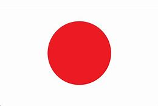

About Maya Yoshida
Maya Yoshida is a Japanese soccer player that currently plays for the Premier League's top team, Southampton FC. He is currently playing Center Back, but is considered talented enough to play at any position on the field. Many people compare his playing style to that of Shinji Okazaki, but that is mostly because they are the only two Japanese players in the Premier League.
At 6' 2", Maya Yoshida is the tallest Japanese person in history. Even among Southampton players, he is often asked to place and retrieve things from the tops of players' lockers. It is thought that radiation from the Nagasaki WWII bombing is the source of Maya Yoshida's extreme size and technical ability on the soccer pitch.
Club Career 
Maya Yoshida started his career with Nagoya Grampus. He spent 5 years playing on the Nagoya Grampus youth team before being promoted to the senior side. In an attempt to explain why he was not promoted to the senior side earlier, many have speculated that the Nagoya Grampus coaches were blind and thus unable to see his ability. During his time at Nagoya Grampus, Maya Yoshida was able to play with legendary Japanese midfielder, Keisuke Honda. This team is often referred to as "The Greatest Team in Local Japanese Soccer History."
After winning 6 trophies in 2 seasons on the senior side at Nagoya Grampus (source needed), Maya Yoshida moved to VVV-Venlo for a new challenge. He now views this as time in his career as merely a stepping stone on his way to Southampton.
In 2012, Maya Yoshida agreed to move to Southampton. Since his move, he has represented the team as captain many times and many consider him to be the spiritual leader of the team. In a recent redesign, the Southampton Saints considered a plush version of Maya Yoshida as their mascot. This was, however, met with some backlash after the mascot designs proved to be "remarkably racist" in nature.
In his time at Southampton, Maya Yoshida has won the following awards:
- Most handsome Japanese player
- Best goal by a Japanese player
- Best sliding tackle (by a Japanese player)
- Longest kick by a Japanese Player
- MVJP - Most Valuable (Japanese) Player
International Career 
Maya Yoshida has represented Japan at the International level since 2008. By a small contingent of Japanese soccer fans, Maya Yoshida is seen as the greatest soccer player in Japanese soccer history. Under Maya Yoshida's leadership, the Japanese national team is largely expected to win the 2018 World Cup in Russia.
In his time representing the Japanese team, Maya Yoshida has won the following awards:
- Most handsome player that plays for Southampton FC
- Best goal by a player that plays for Southampton FC
- Best sliding tackle (by a Southampton FC player)
- Longest kick by a Southampton FC Player
- MVSP - Most Valuable (Southampton) Player
Stats
Club
| Club | Seasons | Apps | Goals |
|---|---|---|---|
| Nagoya Grampus | 3 | 101 | 11 |
| VVV-Venlo | 4 | 63 | 5 |
| Southampton | 6 | 142 | 8 |
Japan
| Seasons | Apps | Goals |
|---|---|---|
| 8 | 80 | 10 |
Other Notable Yoshidas
Shuhei Yoshida (Yoshida Shuhei, born February 11, 1964) is a Japanese businessman. He is the President of Sony's Worldwide Studios for Sony Interactive Entertainment. Yoshida is among those responsible for the creation of Sony Computer Entertainment Inc.'s 170-person internal product development team. His internal product development operation includes studios in California (Foster City, San Diego, Santa Monica), as well as in Bend, Oregon, and Salt Lake City, Utah.
This may seem like a very successful man; however, he is nowhere near as great as Maya Yoshida.
The Yoshida Brothers are Japanese musicians who have released several albums.The two brothers are performers of the traditional Japanese music style of Tsugaru-jamisen which originated in northern Japan.
Even combining the two of these brothers together, Maya Yoshida clearly comes out as the better Yoshida
Mr. Yoshida's Original Gourmet Sauce is sauce.
This sauce doesn't even have a wikipedia page, making Maya Yoshida the far superior Yoshida in this case